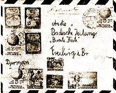

Stielaugen
bekommen viele, wenn sie einen solchen Umschlag sehen. Das sind die leidenschaftlichen Briefmarkensammler, die für ihr Hobby manche Stunde und auch manche Mark opfern. Leider kann ich keinem von ihnen - und wäre er auch mein bester Freund - diese Briefmarken schenken, denn sie gehören mir gar nicht. Ich darf sie nur eine Weile mit ihren Flugzeugen, der Erdkugel, einem Sportpokal und einigen Tieren. Dann gebe ich sie weiter. An wen, werdet ihr gleich lesen.
Vorher muß ich euch an etwas erinnern: Ende November 1958 hatte uns ein neunjähriqer Junge, Dieter Menne, Grüße aus Martapura (das auf der Insel Borneo liegt) geschickt. Natürlich gibt es unter den dortigen eingeborenen Kindern keine, die Dieter heißen. Unser Dieter ist in Freiburg geboren, wohnt aber schon seit drei Jahren in Indonesien, wozu die Insel Borneo gehört.
Fünf Wochen unterwegs
Um Dieter eine Weihnachtsfreude zu machen, schickte ihm unser Freund Klaus Philippeit aus Kirchzarten einen kleinen Tannenzweig per Luftpost.
Der ist über Länder und Meere tatsächlich auch hingekommen, denn Dieter hat jetzt geantwortet und, sich für die Sendung herzlich bedankt. Wie er schreibt, hatten sie auch einen Weihnachtsbaum der zwar keine Tanne war, aber doch ganz schön aussah. Immerhin war der echte Zweig aus dem Schwarzwald dann doch was Besonderes.
Dieters Brief, der vor etwa acht Tagen eingetroffen ist, wurde am 15. Januar in Martapura abgeschickt. Er war über fünf Wochen unterwegs und enthielt einen großen Bericht über "Land und Leute" von Borneo. Diese lehrreiche Schilderung ist nebenstehend abgedruckt. Wir danken Dieter dafür und natürlich auch seinen Eltern, die hin dabei vielleicht etwas geholfen haben. Zum Schluß von Dieters Brief heißt es: "So, für heute wäre das genug. Ich komme im Frühjahr für einen Europaurlaub auch nach Freiburg. Dann werde ich mal schauen, wo die Bunte Kiste' wohnt. Herzliche Grüße Euer Dieter Menne Von Borneo.
Die Marken. auf dem Brief sind für Klaus Philippeit, wenn er sie sammelt. So, nun wissen alle, die Stielaugen gemacht haben, wo der schöne Umschlag hinkommt. Dahin wo der Tannenzweig herkam. Das ist klar!
Mit indonesischer Verbeugung und badischem Gruß verbleibe ich
Euer Muck